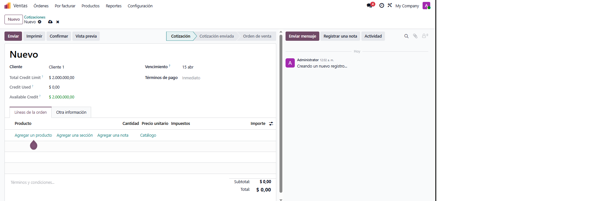

Gestión de Cuenta Corriente y Límite de Crédito
Protección financiera inteligente: Controle el riesgo crediticio de sus clientes y asegure la liquidez de su empresa en Odoo.
Resumen del Módulo
Este módulo proporciona una gestión avanzada de los límites de crédito, permitiendo un control riguroso sobre las operaciones de venta. Está diseñado para empresas que necesitan centralizar el análisis de riesgo, el seguimiento de pagos y la trazabilidad de títulos (cheques) directamente en su flujo comercial.
Funcionalidades Destacadas
Validación Estricta
Bloqueo automático de pedidos si se excede el saldo o la cuenta está morosa.
Control de Cheques
Integra cheques de terceros pendientes al cálculo real del saldo deudor.
Riesgo Dinámico
Análisis financiero con adjuntos y estados de aprobación por roles.
Flujo de Operación Detallado
Un proceso estructurado para garantizar la seguridad financiera de su negocio.
Captura de la Demanda Crediticia
El equipo comercial inicia la solicitud indicando el monto deseado. El Analista de Riesgo recibe la notificación y procede a:
- Adjuntar reportes de solvencia y balances en el Chatter.
- Verificar el historial de pagos y comportamiento anterior.
- Marcar el estado como "Analizado" para elevarlo a gerencia.


Autorización por Niveles
Sólo los usuarios con rol de Aprobador pueden confirmar el crédito definitivo. Una vez aprobado:
- El sistema habilita la operación de pedidos del cliente.
- Se establece el límite máximo permitido.
- Se pueden configurar delegaciones dinámicas si el auditor lo requiere.
Panel Informativo en Ventas
Cuando se crea un presupuesto, aparece un panel con información crítica en tiempo real:
- Crédito Disponible: Saldo exacto tras restar deudas y cargos.
- Alerta de Bloqueo: Indicador visual si se intenta exceder el monto.
- Transparencia: El comercial conoce el estado exacto sin consultar a finanzas.

Soporte y Contacto Profesional
En Tecnegia, transformamos sus desafíos de negocio en soluciones eficientes dentro de Odoo.
¿Necesita asistencia técnica?